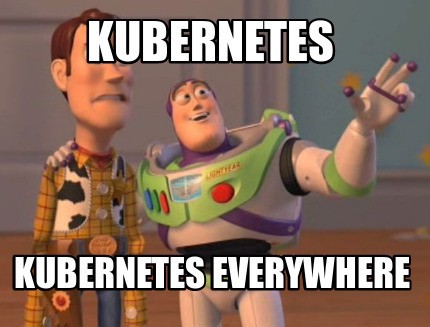

I have fond memories from the way that Apache Mesos made me feel. I felt like I could deliver workloads, anywhere.
For me, Kubernetes has replaced Mesos. I still can’t do the things that I was doing with Cloud Foundry, but its getting closer. Cloud Foundry (Tanzu Application Service) is still my primary choice for delivering secure, scalable, reliable, cloud native applications. But, Kubernetes has some very cool capabilities, and I can deploy it to more situations than Cloud Foundry.
So, I’m deploying several Kubernetes clusters, and I’m going to share my experiences here.
Flux Control
I’m using FluxCD to help manage my clusters. I’ve setup git repository to centralize my cluster configuration. You can find my Flux Control repository on GitHub.
One of my goals for 'Flux Control' was to be able to hand-off control, to different development teams. So, the centralized flux-control handles the 'admin' level configs, but also reaches out to each development organization’s git repository to pull in their application configuration. So each development team can manage their own application configuration, and the centralized flux-control will pull it in. The convention I’m using is that each development team, a 'tenant' in Flux terminology, must have a 'flux' repository, inside of their github org.
Tenants
As of today, I have a few 'tenants' already setup.
-
dashaun-dev
-
springkubed-io
-
springofficehours-io
Because each tenant has their own 'flux' repository, they manage their application configuration independent of the infrastructure. The infrastructure is managed by the centralized flux-control repository. This allows each tenant to be moved across clusters, without having to change their application configuration.
Cluster Configuration
This is where things get fun, this is where the "Kubernetes Everywhere" really shows. I have several clusters already setup. Not all of them are managed by 'flux-control' yet, but I’m working on that.
juice-docker-desktop
-
Single node, Docker Desktop enabled Kubernetes.
-
My 'daily driver' Mac Studio, M1 Max, 32GB RAM
tanzu-docker-desktop
-
Single node, Docker Desktop enabled Kubernetes.
-
My 'work laptop' 2020 Mac Book Pro, Intel, 16GB RAM
thunder-docker-desktop
-
Single node, Docker Desktop enabled Kubernetes.
-
My 'Windows' desktop, Intel, GPU, 32GB RAM
springkubed
-
Single node
-
Raspberry Pi 4, 2GB RAM
-
k3s
-
Ubuntu
arkansas
-
Single node
-
Intel, 4GB RAM
-
old, inefficient, unsupported
-
box in the basement closet
-
k3s
clusterhat00
-
5 node cluster
-
1x Raspberry Pi 4, 8GB RAM
-
4x Raspberry Pi Zero 2, 512MB RAM
-
Raspberry Pi OS Customized for use with ClusterHat
-
k3s
microk8s
-
3 node cluster
-
3x Raspberry Pi 4, 8GB RAM
-
Ubuntu
-
microk8s
suse-rancher
-
TBD
redhat-openshift
-
TBD
vmware-tanzu
-
TBD
I still have a ton of work to do, and I will be adding even more clusters. I’m also going to be adding more tenants, and more applications. I’m going to be using this blog to share my experiences, and hopefully help others along the way.
This should be fun.
Twitter
LinkedIn
Email